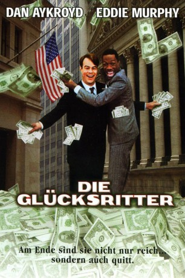

#2088 Die Glücksritter
Alternativ: Trading Places
Auszeichnungen: für 1 Oscars nominiert 2 BAFTA-Awards gewonnen
 
 IMDB-Wertung: 7.5 / 10
IMDB-Wertung: 7.5 / 10  Metascore: 69
Metascore: 69 
Randolph und Mortimer Duke haben gewettet: der eine ist der Meinung, jeder könne den Job eines Brokers ausüben, der andere meint, nur wer die richtigen Gene und Umgebung genossen hat, ist dazu in der Lage. Also müssen Louis Winthorpe III und Billy Ray Valentine ohne ihr Wissen ihre Rollen tauschen – vom Kleinkriminellen zum Börsenexperten und umgekehrt.
Jahr: 1983
Dauer: 116 Minuten
FSK: 16
Land: USA Studio: Paramount PicturesTonspuren: DD2.0 - ,
Untertitel:
Auflösung: 1080p (1920x1080) Größe: 11161 MB
Genre: Komödie, Weihnachten
Regisseur:  John Landis
John Landis
Drehbuch: Timothy Harris, Herschel Weingrod
Soundtrack: Elmer Bernstein
Darsteller:
 Denholm Elliott als Coleman
Denholm Elliott als Coleman Dan Aykroyd als Louis Winthorpe III
Dan Aykroyd als Louis Winthorpe III Ralph Bellamy als Randolph Duke
Ralph Bellamy als Randolph Duke Don Ameche als Mortimer Duke
Don Ameche als Mortimer Duke Eddie Murphy als Billy Ray Valentine
Eddie Murphy als Billy Ray Valentine Tom Mardirosian als Officer Pantuzzi
Tom Mardirosian als Officer Pantuzzi Robert Curtis Brown als Todd
Robert Curtis Brown als Todd Nicholas Guest als Harry
Nicholas Guest als Harry John Bedford Lloyd als Andrew
John Bedford Lloyd als Andrew Clint Smith als Doo Rag Lenny
Clint Smith als Doo Rag Lenny Giancarlo Esposito als Cellmate #2
Giancarlo Esposito als Cellmate #2 James Eckhouse als Guard
James Eckhouse als Guard Paul Gleason als Clarence Beeks
Paul Gleason als Clarence Beeks Frank Oz als Corrupt Cop
Frank Oz als Corrupt Cop Eddie Jones als Cop #3
Eddie Jones als Cop #3 Bill Cobbs als Bartender
Bill Cobbs als Bartender Jamie Lee Curtis als Ophelia
Jamie Lee Curtis als Ophelia- Kelly Curtis als Muffy
- Bo Diddley als Pawnbroker
 Philip Bosco als Doctor
Philip Bosco als Doctor- Bill Boggs als Newscaster
 James Belushi als Harvey
James Belushi als Harvey- Al Franken als Baggage Handler #1
- Tom Davis als Baggage Handler #2
 Afemo Omilami als Longshoreman
Afemo Omilami als Longshoreman Barry Dennen als Demitri
Barry Dennen als Demitri John Landis als Man with briefcase , uncredited
John Landis als Man with briefcase , uncredited Charles Pendelton als Cop , uncredited
Charles Pendelton als Cop , uncredited- Arleen Sorkin als Woman at Party , uncredited
- Maurice Woods als Duke & Duke Employee
- Richard D. Fisher Jr. als Duke & Duke Employee
- Jim Gallagher als Duke & Duke Employee
- Anthony DiSabatino als Duke & Duke Employee
- Bonnie Behrend als Duke & Duke Employee
- Sunnie Merrill als Duke & Duke Employee
- James Newell als Duke & Duke Employee
- Mary St. John als Duke & Duke Employee
- Bonnie Tremena als Duke & Duke Employee
- David Schwartz als Duke & Duke Employee
- Tom Degidon als Duke Domestic
- William Magerman als Duke Domestic
- Alan Dellay als Duke Domestic
- Florence Anglin als Duke Domestic
- Ray D'Amore als Duke Domestic
- Bobra Suiter als Duke Domestic
- Herb Peterson als Duke Domestic
- Sue Dugan als Duke Domestic
 Walt Gorney als Duke Domestic
Walt Gorney als Duke Domestic- B. Constance Barry als Duke Domestic
- P. Jay Sidney als Heritage Club Doorman
Datei: X:\1983\Glücksritter, Die (1983, FSK16, 1920x1080).mkv seit 01.10.2015
Festplatte: HD 1980-1986
 Es gibt insgesamt 35 Filme in der Gruppe '1983'
Es gibt insgesamt 35 Filme in der Gruppe '1983'